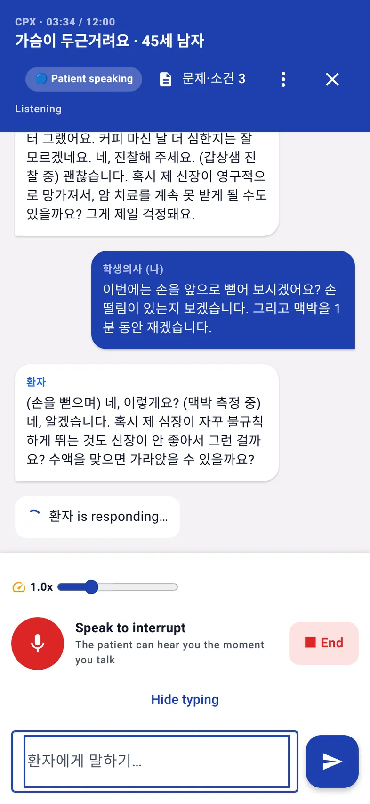
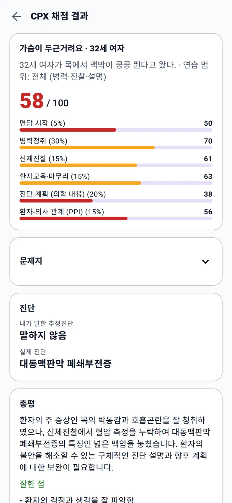
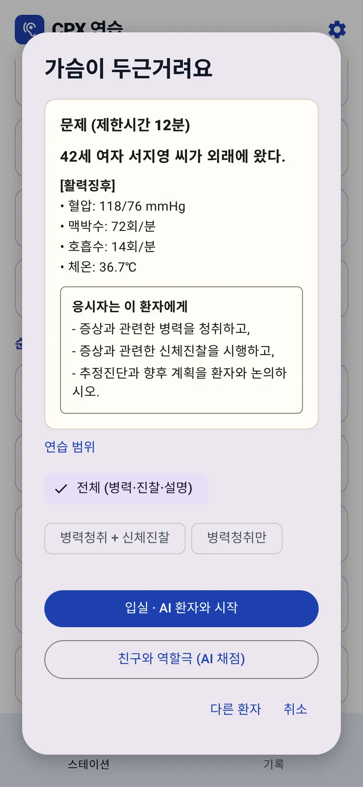
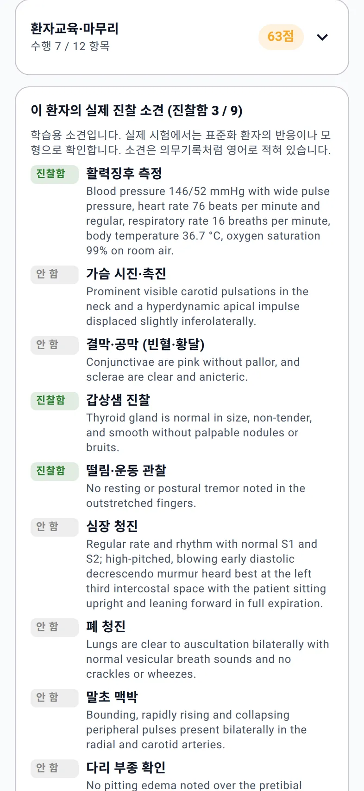
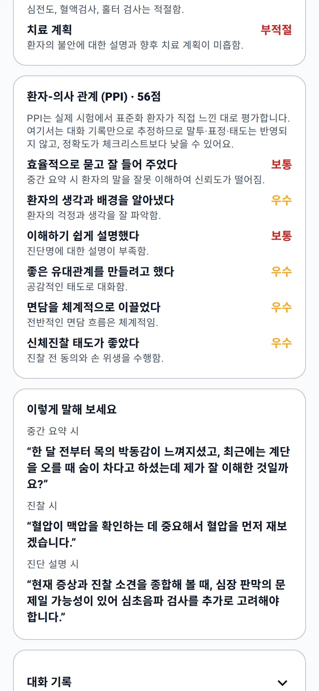
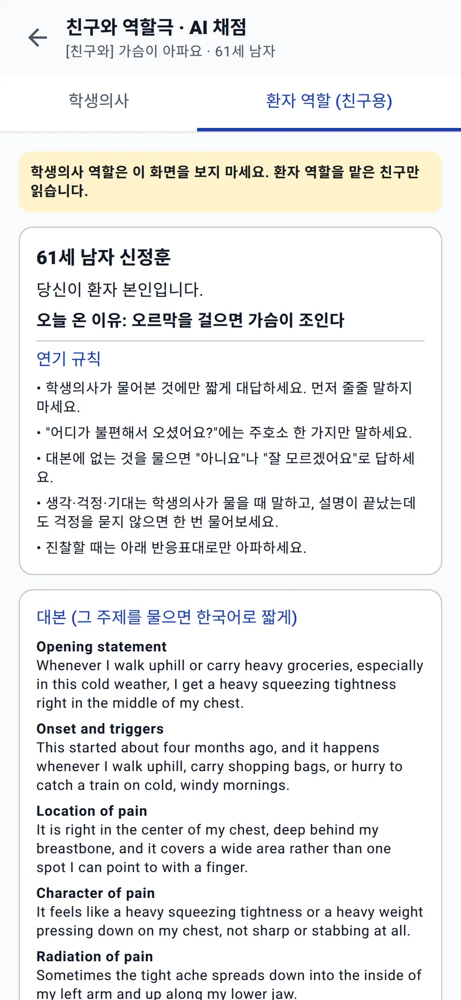
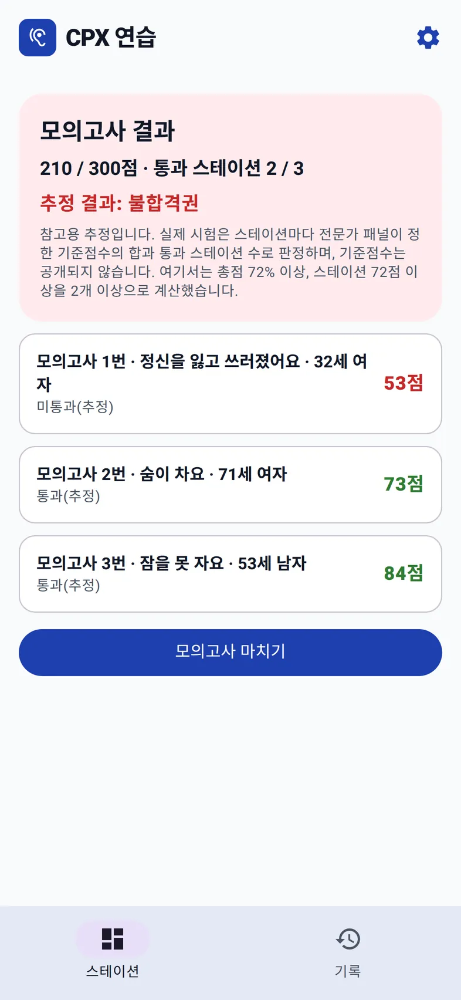
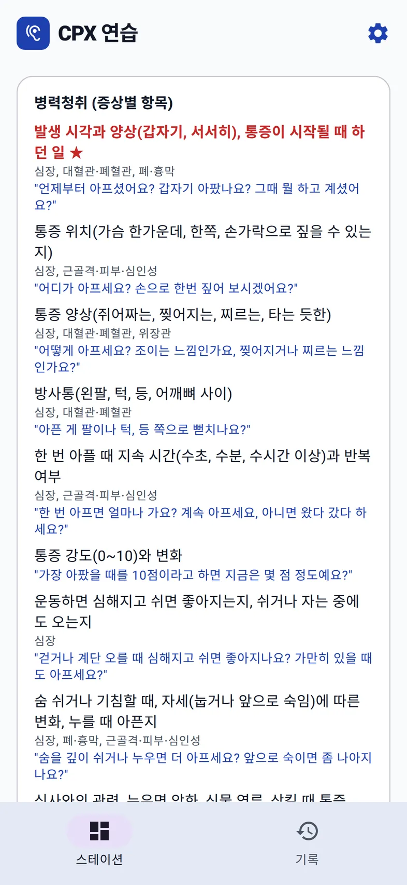
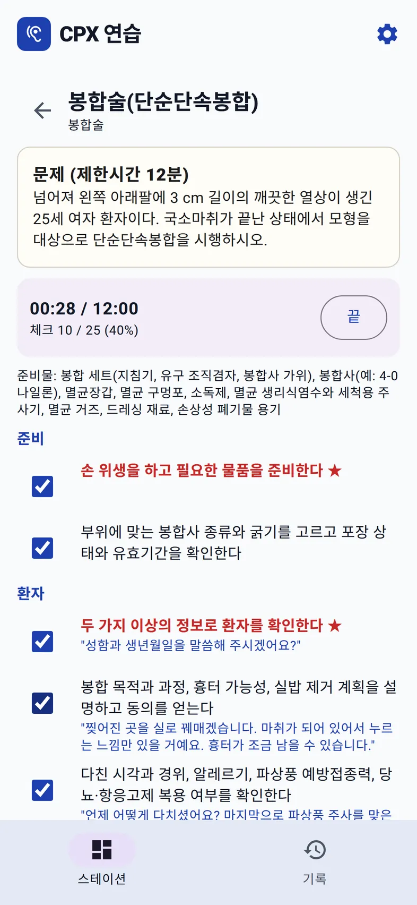

58/ 100
카페인과 갑상샘까지 물었는데, 판막을 놓쳤어요
- 내가 말한 진단
- 말하지 않음
- 실제 진단
- 대동맥판막 폐쇄부전증
결과표가 짚은 것: 혈압 146/52의 넓은 맥압, 이완기 잡음, 도약맥.
이 스테이션 전체 보기 →문제지를 읽고 입실하면 한국어로 대답하는 AI 표준화 환자가 기다려요. 병력청취, 말로 하는 신체진찰, 설명까지 12분. 끝나면 놓친 질문과 다음에 할 말이 적힌 결과표가 남아요.
무료 · 가입 없음 · 광고 없음 · 48개 임상표현 전부


연습 전에 필요한 두 가지 자료. 임상표현별 문진 질문과 신체진찰 동작을 설치·로그인·API 키 없이 바로 확인하세요.
책으로는 무엇을 물어야 하는지 알아요. 12분 안에 실제로 묻는 연습은 상대가 있어야 해요.
스터디 친구가 없는 밤에도, 같은 증상을 열 번째 돌 때도, 환자는 대본대로 대답하고 채점은 같은 기준으로 해요.
실제 앱 화면을 녹화한 영상이에요. 누르면 이 자리에서 YouTube 영상이 재생돼요.
문제지를 읽고 입실해서 결과표를 받기까지.
한국어로 묻고, 환자가 한국어로 대답해요.
놓친 항목과 다음에 할 문장이 어떻게 나오는지.
한 스테이션은 다섯 단계로 흘러가요.
48개 임상표현 중 하나를 고르면 2026년 형식 문제지가 떠요. 이름과 나이, 활력징후, 과제만 있고 주호소는 없어요.

상단에 경과 시간이 흘러요. 말로 해도 되고 타이핑해도 돼요. 환자는 물은 것에만 대답하고, 걱정과 질문은 스스로 꺼내요.
“손을 앞으로 뻗어 보시겠어요?” 진찰을 말하면 환자가 그에 맞게 반응하고, 연습 모드에서는 소견을 바로 확인할 수 있어요.

면담 시작부터 PPI까지 6개 영역 점수와 함께, 내가 말한 추정진단과 실제 진단이 나란히 나와요.
항목마다 수행·부분·누락. 누락한 항목에는 바로 쓸 문장이 붙고, 채점이 틀렸으면 직접 고칠 수 있어요.
옆으로 넘겨 보세요 →
시연용으로 진행한 세 번의 진료예요. 셋 다 그럴듯하게 진료했지만, 결과표는 놓친 것을 짚었어요.
결과표가 짚은 것: 혈압 146/52의 넓은 맥압, 이완기 잡음, 도약맥.
이 스테이션 전체 보기 →[심각] 운동 중 실신 및 흉통을 미주신경성 실신으로 오진하여 위험을 과소평가함
모의고사 3개 스테이션 결과 보기 →[주의] 흉통 지속 시 응급 대처(119 연락, 니트로글리세린 복용법)에 대한 구체적 교육 누락
역할극으로 녹음·채점하는 법 →놓친 항목마다 바로 쓸 문장이 붙고, PPI 6개 영역은 우수·보통 같은 등급과 한 줄 이유로 나와요. 다음 입실에서 그 문장이 먼저 나오게 만드는 게 목표예요.

다섯 가지 방법으로 연습해요.
48개 임상표현, 1,100개 넘는 증례. 같은 증상을 골라도 환자가 바뀌어요.
한 스테이션 따라가기 →
친구는 환자 대본을 보고 연기하고, 휴대폰은 녹음해요. 화자를 나눠 받아쓰고 같은 기준으로 채점해요.
역할극 연습법 →
9개 또는 3개 방 연속, 12분 자동 종료, 힌트 없음. 결과와 추정 합격선은 마지막에.
모의고사 결과 보기 →
임상표현마다 감별 범주, ★ 필수 질문, 그대로 말할 문장, 검사·치료 핵심.
API 키 없이 사용
공부 노트 보기 →
봉합, 심폐소생술, 채혈 등 9개 술기. 단계별 체크리스트와 12분 셀프 체크.
API 키 없이 사용
술기 체크리스트 →한두 문제만 무료로 풀게 한 뒤 이용권 결제를 유도하는 서비스가 아니에요. 구독 상품, 크레딧 충전, 회원가입, 광고가 아예 없어요. 서버 비용을 구독료로 받는 대신, Google AI Studio에서 카드 등록 없이 발급받은 내 무료 Gemini API 키로 연결해 쓰기 때문에 48개 임상표현 전부를 계속 0원으로 연습해요.
아니에요. 1회 체험 뒤 유료 결제를 유도하는 앱이 아니고, 앱 안에 결제창·구독 플랜·크레딧 충전 자체가 없어요. AI 기능은 Google AI Studio에서 카드 등록 없이 발급받는 내 무료 Gemini API 키로 동작해서 자동으로 돈이 빠져나가는 일도 없어요. 키 없이도 48개 임상표현 공부 노트와 기본진료술기 체크리스트는 바로 열려요. 다만 무료 등급에서는 Google이 대화 내용을 서비스 개선에 쓸 수 있으니 실제 환자 정보나 개인 정보는 말하지 마세요. 사용량이 몰리면 Google 쪽 한도 때문에 채점이 늦어질 수 있고, 그때는 저장된 대화를 나중에 다시 채점하면 돼요.
아니에요. 국시원의 채점표와 배점은 공개되지 않아요. 앱의 체크리스트는 공개된 시험 안내(문제지 양식, 환자-의사 관계 평가 영역, 임상표현 목록)를 참고해 만든 연습용 기준이고, 학교나 실제 시험과 다를 수 있어요. 채점이 틀렸다고 생각하면 항목을 직접 고칠 수 있어요.
네. 웹 앱이라 아이폰·아이패드 Safari, PC의 Chrome·Edge, 안드로이드 Chrome에서 주소만 열면 돼요. 홈 화면에 추가하면 앱처럼 전체 화면으로 열려요. 안드로이드는 Google Play 앱도 있어요.
말로 진행해요. 어떤 진찰을 하겠다고 말하면 환자가 대본대로 반응하고, 연습 모드에서는 그 진찰의 소견이 표시돼요. 손의 위치나 기법은 평가하지 못해요. 손기술이 필요한 기본진료술기 9개는 단계별 체크리스트와 12분 타이머로 스스로 점검해요.
네. 6개 영역을 우수·보통 같은 등급과 한 줄 이유로 평가하고, 바꿔 말하면 좋을 문장을 상황별로 보여 줘요. 다만 대화 기록만 보고 추정하므로 말투·표정·시선은 반영되지 않아요.
쓰는 기기 안에만 저장돼요. 계정이 없어서 다른 기기와 자동으로 동기화되지 않아요. 웹 앱에서 음성 진료 중에 화면을 잠그거나 다른 앱으로 가면 대화가 일시정지되니, 12분 동안은 화면을 켜 두세요.